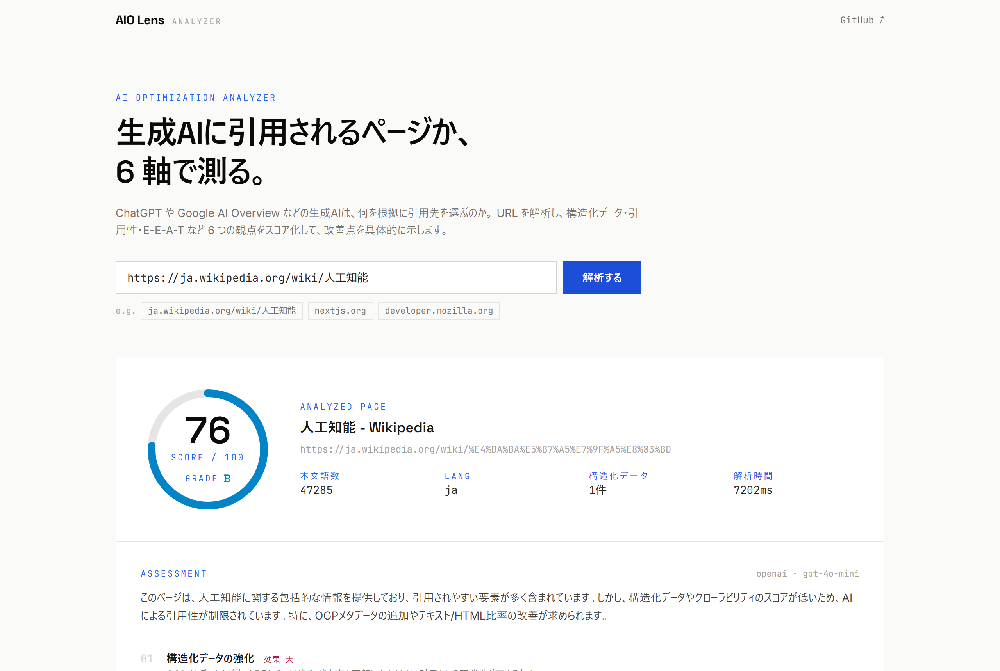
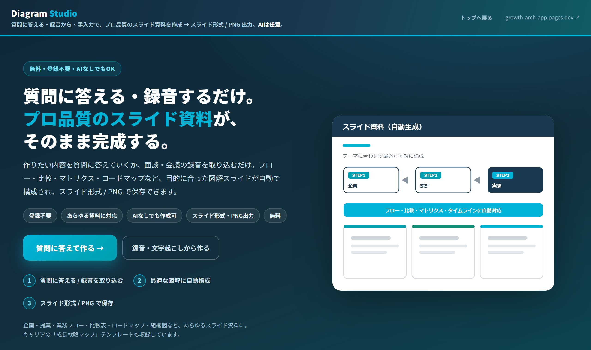
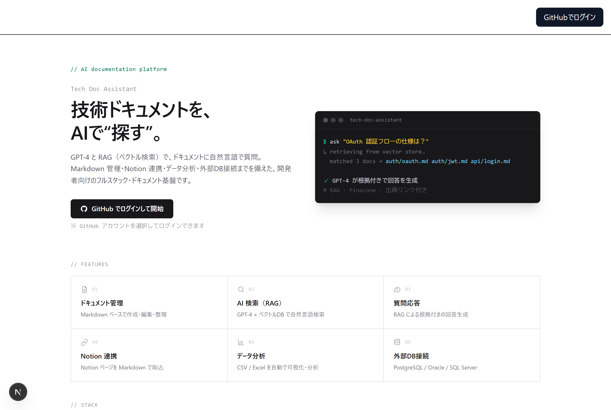

スクリーンショット（aio-lens-summary.png）をこのフォルダに保存すると表示されます大学で機械・精密システム工学を学んだのち、防衛関連機器の組み込み設計（C言語）からキャリアをスタート。 その後 Web システム開発へ転じ、社内システムの要件定義〜開発をチームリーダーとして担当しました。
現在の主軸は 生成AIです。設計書からテスト打鍵表を生成する業務の RAG 自動化や、 社内ナレッジ参照のための RAG プラットフォーム構築（プロジェクトリーダー）など、 LLM をプロダクションで動かす経験を積んできました。
並行して、AIを活用したマーケター（SEO / AIO・MAツール運用・データ分析）としても活動。 「技術で作れる」だけでなく「ビジネス成果につなげる」ことを一貫して重視しています。
データ分析で課題を発見し、技術で解決まで導く。「作ること」より「成果が出ること」を起点に設計します。
進捗や変更を迅速・詳細に共有し、チーム全員が同じ視界で進められる状態をつくる。タスク分解で抜け漏れを防ぎます。
セミナー・ハッカソン参加や資格取得で最新技術を追い、作ったものを技術記事として発信して定着させています。
※ 実務・個人開発で利用した主な技術。年数の詳細は職務経歴書をご参照ください。
各プロジェクトを「課題 → アプローチ → 成果」の流れで記載しています。

スクリーンショット（aio-lens-summary.png）をこのフォルダに保存すると表示されます課題
検索の主役が「リンク一覧」から「生成AIの回答」へ移行する中、SEO の次の論点として AIO（AI最適化）が台頭。しかし「自社・顧客ページが“AIから見て”引用されやすいか」を定量把握する手段がなかった。
アプローチ
URL を解析し、AIへの引用されやすさを 6 軸・45+項目でスコア化。ルールベース診断を土台に LLM を“強化レイヤー”として組み合わせるハイブリッド設計を採用し、APIキー未設定・LLM障害時もグレースフルに縮退する構成とした。SSRF対策・プロバイダ非依存のLLM抽象化も実装。
成果 / 工夫
企画・設計・実装・公開（Vercel）まで個人で一貫対応。AIエンジニアリングとマーケティング双方の知見を融合した、差別化された実用ツールとして公開中。
Tech Stack
質問に答える・録音の文字起こしから、プロ品質の図解スライドを自動生成

課題：議事録・面談メモを資料化するのは手間がかかる。PowerPoint が無い人やデザインに不慣れな人でも、短時間で“伝わる”図解スライドを作りたい。
アプローチ：「質問に順番に答える／録音の文字起こしを取り込む」だけで、内容に最適なレイアウト（フロー・比較・2×2・ピラミッド・タイムライン等）を自動選択して構成。重要文抽出・重複圧縮・話者ラベル除去をブラウザ内のローカル処理で実装し、APIキー無しでも完結。Anthropic API（任意）でさらに高品質化も可能。出力はスライド形式(.pptx)と PNGで、PowerPoint・Google スライド両対応。
成果：企画〜実装〜公開まで個人で一貫。登録不要・無料・AI 任意の単一ファイル静的アプリとして公開。Cloudflare Pages で配信し、Docker/Caddy による社内配信構成も用意。主要フローは Playwright で E2E 検証。
役割：企画・UI/UX・実装・公開（個人）／ 配信：Cloudflare Pages・Docker(Caddy)
主な機能
Tech Stack
技術ドキュメントを AI で管理・検索できるフルスタック Web アプリケーション

課題：新規プロジェクト配属に向け、実務で使う技術スタックを「動くプロダクト」を通じて網羅的に習得する必要があった。
アプローチ：技術ドキュメントを AI で管理・検索できるフルスタックアプリを設計。GPT-4 + ベクトルDB(Pinecone) による RAG で自然言語検索・質問応答を実装し、Notion連携・CSV/Excel のデータ分析・外部DB(PostgreSQL/Oracle/SQL Server)接続・GitHub OAuth 認証まで搭載。Docker + GitHub Actions で CI/CD を整備。
成果：フロント(Next.js 14)〜バックエンド(FastAPI)〜RAG基盤〜インフラ(Docker/CI/CD)まで一人で一気通貫に構築・公開。実務想定の技術スタックを横断的に習得した。
役割：企画・設計・実装・公開（個人）／ デプロイ：Vercel・Azure / AWS 構成
主な機能
Tech Stack
課題：社内固有のドキュメント検索や定型文作成が属人的で工数大、ヒューマンエラーも発生していた。
アプローチ：市場調査・ユーザーインタビューで真に必要な機能を特定し、社内ナレッジを安全に参照できる LLM ベースの RAG システムを企画・構築。LLMへの送信前に個人情報をマスキングする前処理層、OAuth2.0/JWT 認証、CI/CD、コスト監視基盤まで整備。
成果：対象部署の業務効率を20%向上、開発全体の納期を50%短縮、30%のコスト削減を実現。
役割：プロジェクトリーダー兼AIフルスタックエンジニア（要員4名・約6ヶ月）。要件定義〜LLM技術選定〜バックエンドAPI〜RAGパイプライン〜進行管理を横断リード。
Tech Stack
設計書からテスト打鍵表の生成を RAG で自動化（非構造データを JSON/Markdown へ正規化）。 並行して、AIO による AI 概要欄反映を狙った Web サイト制作・運用、MAツールの AI 強化（UI/UX最適化）を担当。
学んだ技術や作った成果物を、技術記事として発信し知見を定着させています。
2026.05 – 現在
リブランディング株式会社（業務委託） ／ AIプランナー・開発・運用
AIを活用した Web サイト制作・口コミ施策、データ分析と予測モデル構築、MAツールの AI 強化。
2025.10 – 2026.04
株式会社FERNET ／ Web・AIエンジニア
社内システム改修（チームリーダー）、設計書→打鍵表生成の AI 自動化（RAG）。
2024.04 – 2025.03
日本アビオニクス株式会社 ／ 組み込みエンジニア
輸送機搭載無線機の改修設計（基本・詳細設計、C言語）。
2024.03
帝京大学 理工学部 機械・精密システム工学科 卒業
AI を活用したアプリ開発・PoC、RAG システム構築、AIマーケティング施策など、お仕事のご相談を承っています。 まずはお気軽にメッセージください。